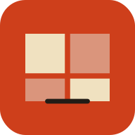

Sovellus asennetaan suoraan selaimesta puhelimen kotinäytölle. Sen jälkeen se avautuu kuin mikä tahansa sovellus ja toimii myös ilman verkkoa.
Hetki, katsotaan onko asennus mahdollinen tässä ympäristössä.
Tämä ei ole sovelluskaupasta ladattava tiedosto. Se on verkkosovellus, jonka selain asentaa itse. Siksi mitään .apk- tai .ipa-tiedostoa ei ole olemassa eikä sitä tarvitse etsiä.
Hyöty: päivitys tapahtuu itsestään, kun sivustoa päivitetään — kenenkään ei tarvitse ladata uutta versiota. Ehto: sivuston on oltava https-alkuisessa osoitteessa. Paikallisesti tiedostoa avattaessa asennus ei ole mahdollinen.
Lähetä tämä osoite opiskelijoille, niin he voivat asentaa sovelluksen samalla tavalla.